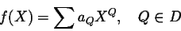
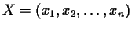
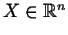
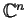
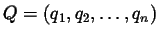
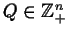
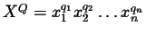
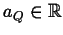
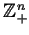
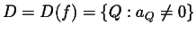

Alexander B. Aranson
Department of Mathematics, Keldysh Institute of Applied Mathematics
Miusskaja Square 4, Moscow 125047, Russia
gtrtp@glasnet.ru, aranson@spp.keldysh.ru


,
or
,
,
,
is a monomial, coeficients
or and D is some set in
. The set
is called the support of the polynomial f(X). The convex hull M=M(f) of the set D is called the Newton polyhedron of the polynomial f(X). There is some correspondence between properties of the polynomial f(X) and of its Newton polyhedron M(f). It was studied by Bruno, Soleev, Khovanskiy and somes other. We propose algorithms and the computer programm for computation of the Newton polyhedron of any multidimensional polynomial, and for computation of all elements of this polyhedron (surfaces, vertices, edges, etc.). We consider the application of the Newton polyhedron method for analysis of the behavior of a 4-dimensional reversible ODE system near its equilibrium point. This system appeared from Hydrodynamics after reduction on the center manifold of the water-wade problem.